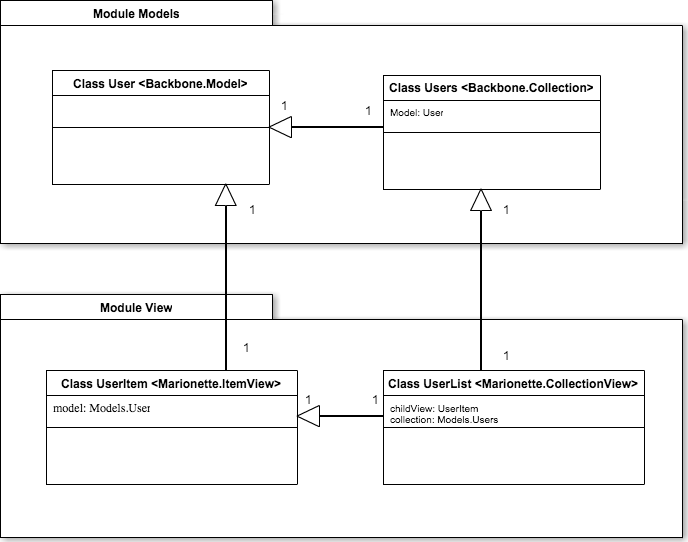
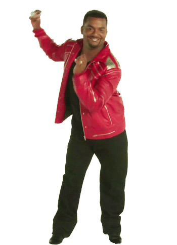

Primeros pasos en Backbone y Marionette


Backbone
"Backbone.js gives structure to web applications by providing models with key-value binding and custom events, collections with a rich API of enumerable functions, views with declarative event handling, and connects it all to your existing API over a RESTful JSON interface."
Marionette
"Marionette simplifies your Backbone application code with robust views and architecture solutions."
Handlebars
Handlebars.js is a superset of Mustache; provides control flow statements, like if and else conditionals or for loops
Ambiente de desarrollo
- Dependencias manejadas por npm, bower
- Javascript escrito en Coffee
- Grunt para assets y watcher
Hello Backbone Example
- Registro de nuevo usuario
- Listar usuario
Estructura básica
|-- bower_components
| |-- backbone
| |-- ...
|-- css
|-- js
|-- node_modules
| |-- .bin
| |-- grunt
|-- templates
| |-- new_user.jst
| |-- user_item.jst
|-- bower.json
|-- Gruntfile.js
|-- index.html
|-- package.json
Clases principales en Hello Backbone
Hello Backbone Example
git clone git@bitbucket.org:cavg/hello-backbone.git
Veamos código!!!
Referencias
Books Backbone.js Applications by Addy Osmani
Backbone Marionette A Gentle Introduction by David Sulc